RACES 2022
BAHREIN
There was heartbreak all round for Oracle Red Bull Racing as World Champion Max Verstappen and teammate Sergio Perez were forced to retire from the season-opening Bahrain Grand Prix after suffering from suspected fuel pump issues.

The safety car left the track at the end of lap 50 and Max attempted to wrestle his car to the end of the race. The attempt was valiant, but on lap 54, after also complaining of power issues, he was forced to retire from a suspected fuel pump issue.
SAUDI ARABIA
When the lights went out for the start, Checo got the power down quickest to surge into the lead. Behind him, Leclerc didn’t react as quickly and was instantly put under pressure by Sainz to his right and from behind by Max, who had also made a good start from fourth place on the grid.

At the front, Max was now closing on Leclerc and on lap 42 he used DRS to close right up to the Ferrari driver. Max attacked at the end of the lap and swept past the Ferrari under DRS. Leclerc immediately struck back and using drag reduction on the main straight at the start of lap 43 he powered past Max to retake the lead.